튜브워커 엑셀 대본 + 인물시트로 야담 씬 이미지를 한 번에 일괄 생성
| 엑셀 대본 (.xlsx) | 튜브워커 → 스토리보드 단계 → 엑셀로 추출 |
|---|---|
| 인물시트 이미지 | 튜브워커 → 이미지 단계 → 인물시트 다운로드 |
| Blueprint.json | 클로드코드에서 대본 생성 후 나온 결과물 (튜브워커 음성 생성 때 업로드한 파일과 같은 파일) |
튜브워커의 스토리보드 단계에서 화면 아래의 엑셀로 추출 버튼을 눌러 엑셀 대본을 다운로드합니다.
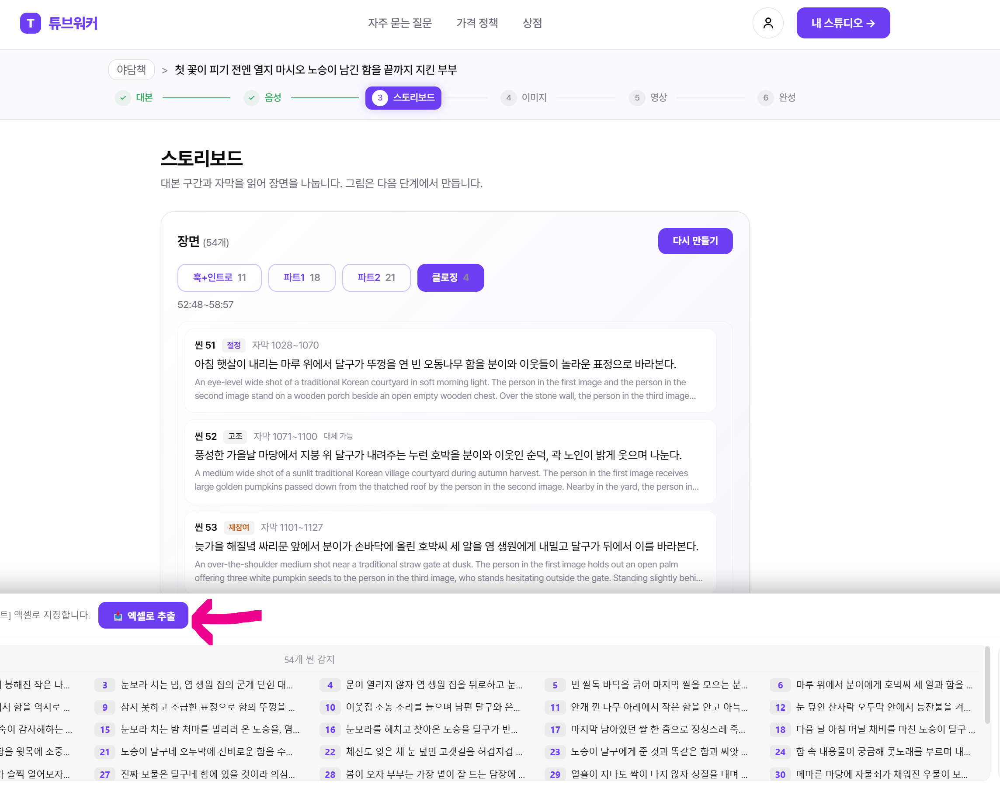
이미지 단계의 인물 시트 영역에서 전체 재생성 버튼을 눌러 인물시트를 생성합니다.
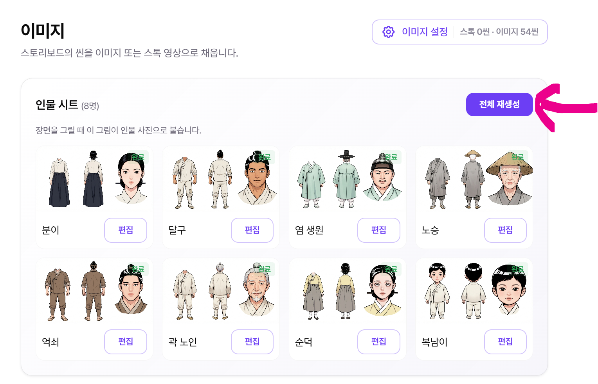
화면 아래의 인물시트 다운로드 버튼을 눌러 인물시트를 받습니다. 파일은 분이.png, 달구.png처럼 인물 이름으로 저장됩니다.
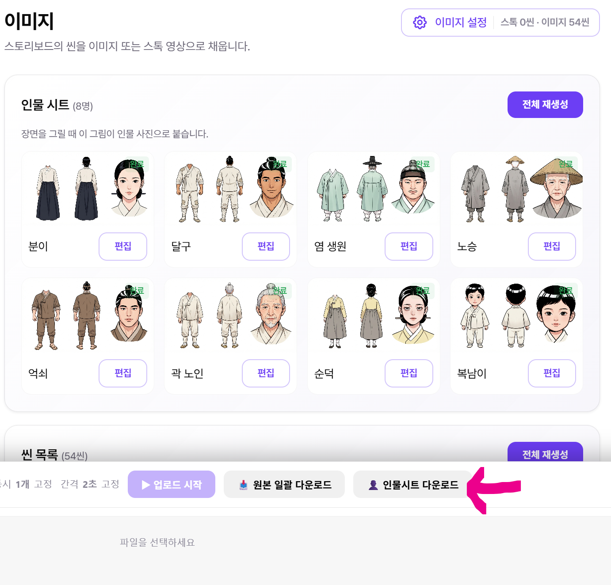
후파의 야담플로우에 접속합니다. 왼쪽 데이터 입력에서 ① 엑셀 시나리오 업로드를 눌러 1단계에서 받은 엑셀 대본을 올립니다.
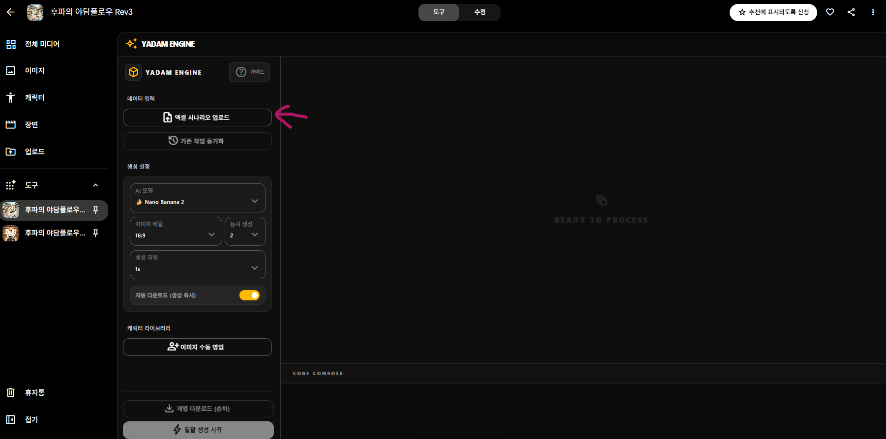
엑셀이 올라가면 씬 목록이 나타나고, 각 씬에 주황색 "미매칭" 표시가 붙어 있습니다.
이어서 ② 블루프린트 업로드를 눌러 클로드코드에서 대본 생성 후 나온 Blueprint.json을 올립니다.
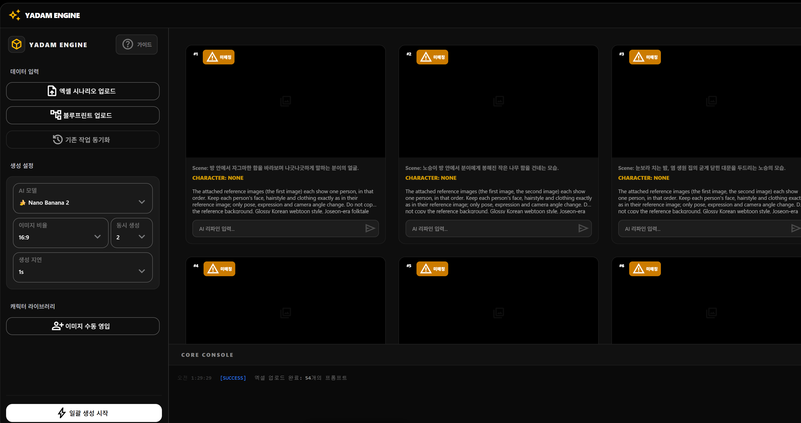
Blueprint.json 처리가 끝나면 모든 씬이 초록색 "매칭 성공"으로 바뀌고, 각 씬에 등장인물(CHARACTER)이 채워집니다. 왼쪽 아래 캐릭터 라이브러리에도 인물 목록이 생깁니다.
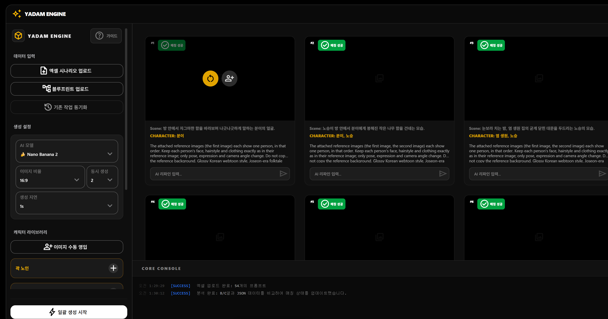
캐릭터 라이브러리에서 인물 이름 옆의 + 버튼을 눌러 해당 인물의 인물시트를 올립니다.
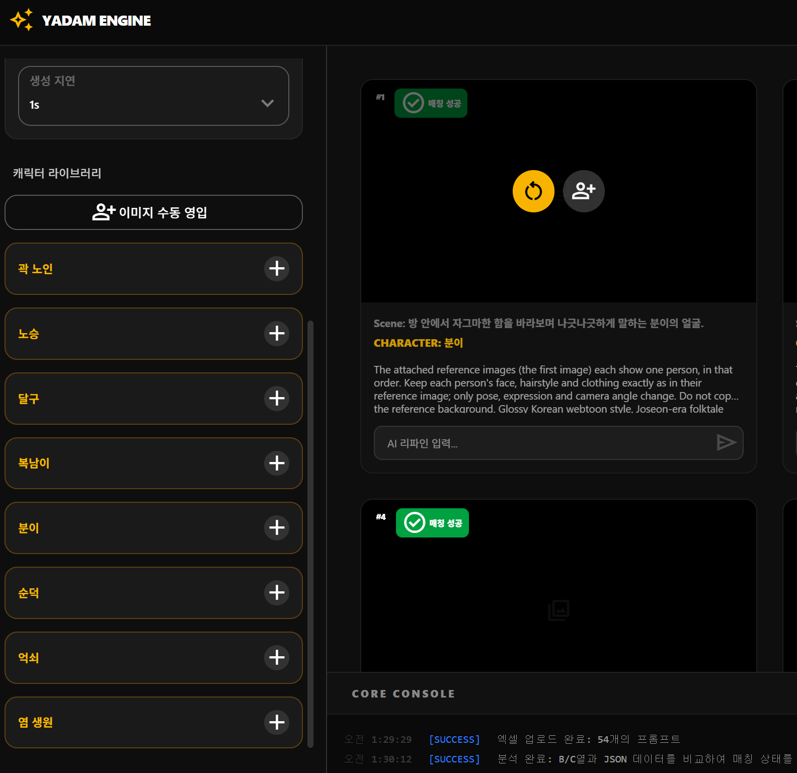
+ 버튼을 누르면 나오는 팝업 메뉴에서 맨 아래의 미디어 업로드를 누릅니다.
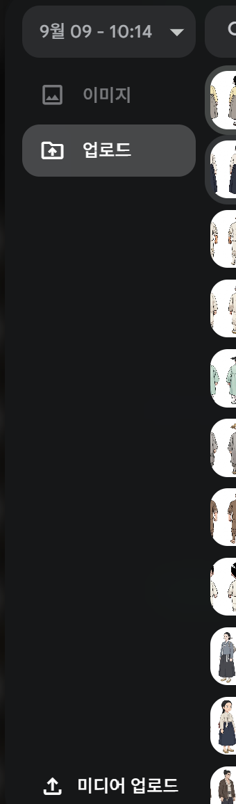
3단계에서 받아 둔 인물시트를 한꺼번에 선택해서 업로드합니다.
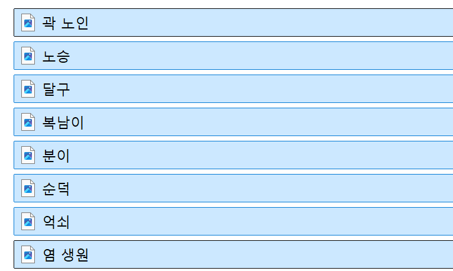
업로드된 목록에서 인물 이름과 같은 파일(예: 분이 → 분이.png)을 선택합니다.
나머지 인물도 + 버튼을 눌러 같은 방법으로 선택합니다. 한 번 올린 이미지는 목록에 남아 있으니 다시 업로드할 필요가 없습니다.
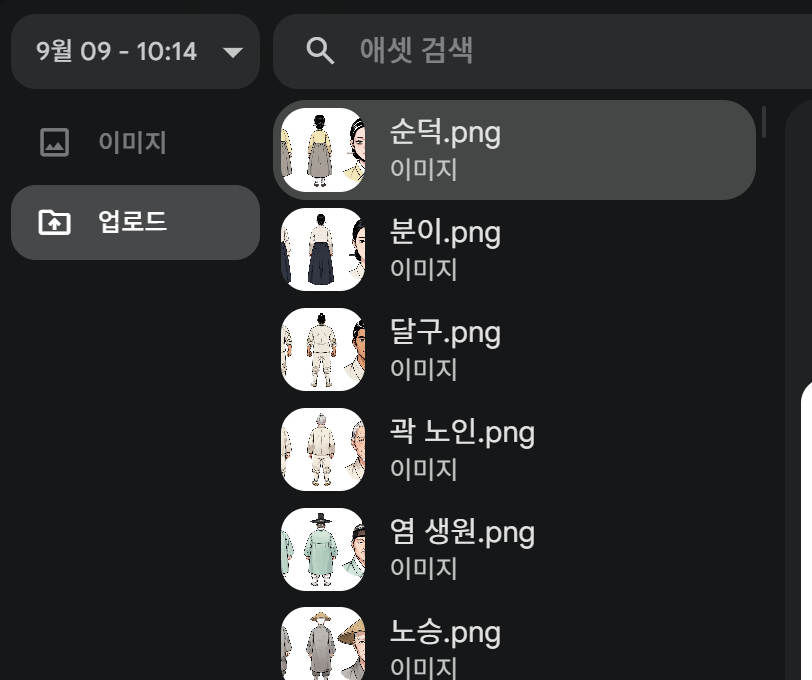
매칭이 끝나면 씬의 CHARACTER 옆에 인물 썸네일이 표시됩니다.
썸네일이 빠진 씬이 있다면, 씬에 마우스를 올렸을 때 나오는 👤+ 버튼을 눌러 인물을 직접 연결합니다.
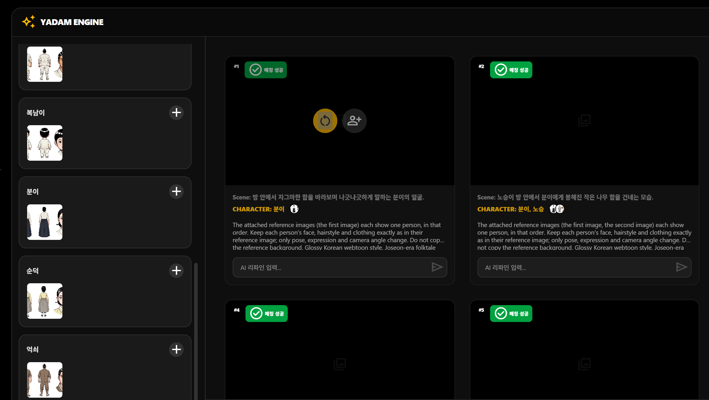
왼쪽 맨 아래의 ⚡ 일괄 생성 시작 버튼을 누르면 모든 씬의 이미지가 차례대로 생성됩니다.
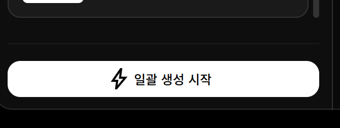